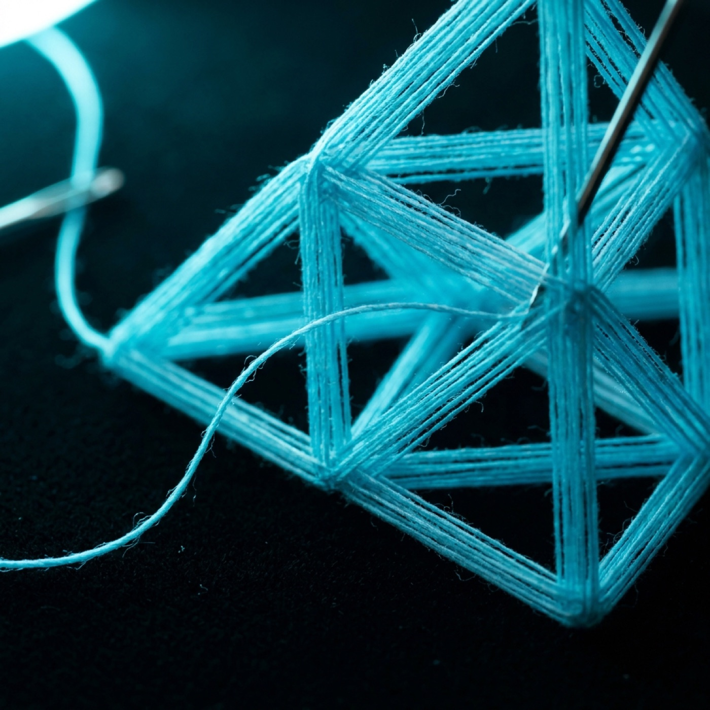
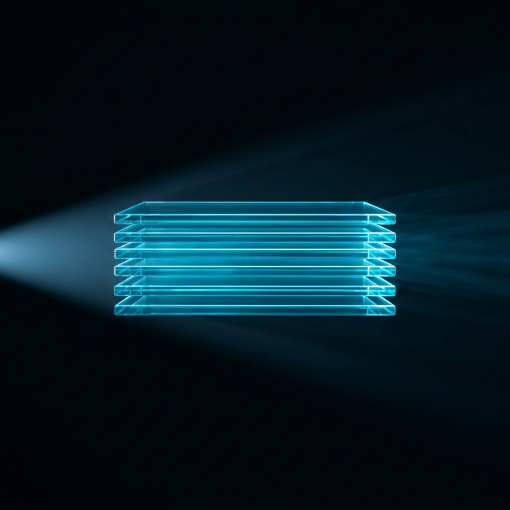
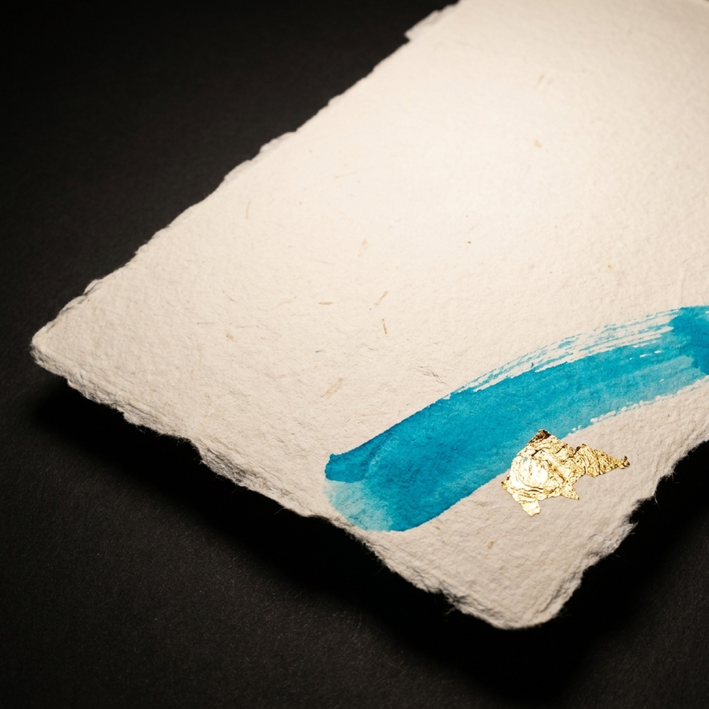

Stacked.
Six lanes, one studio
Studio / About
Campaigns, films, identities, posters — years of it, one studio, one founder. Every piece made to stand out. Drift through it.
Media that actually moves.
The four
tenants



Strategy without
taste is just logic.
Value / 01
Every visual is engineered around what you sell. Composition, light, surface. The shot doesn't exist to be pretty. It exists to make the product land.
Value / 02
∞
In traditional production, every variation costs extra time and budget. Here, a single brief produces dozens of variations in one delivery window.
Value / 03
Most agencies put layers of account managers between the brief and the work. Forvr runs the other way. The founder stays close to every step, from first concept through direction, design, and final delivery, so the work keeps one voice and stays on brand the whole way through.
Founded and run by Rory:
Have a chat with me“Before this I spent time working inside one of the leading AI marketing agencies. I saw how good work actually gets made, and where most of it falls apart. I've always wanted to build things that mean something and leave a mark, not just fill a feed. Forvr is me doing that on my own terms, real creative direction and the tools working together, finished to a standard I'd put my name on.”
“It's new, and we're honest about that. New is the edge, not the excuse. Every brief gets the attention most studios can't give, finished to a standard we won't compromise.”
Stack / What we build with
Closing / The point
Speed, cost, and creative range stop being trade-offs once the workflows are right.